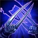

CONTEMPT FOR THE WEAK
Zed's basic attacks against low health targets deals bonus Magic Damage.
This effect can only occur once every few seconds against the same enemy champion.
RAZOR SHURIKEN
Zed and his shadows throw their shurikens.
Each shuriken deals damage to every enemy hit.
Living Shadow
Passive: Zed gains energy whenever he and his shadows strike an enemy with the same ability.
Energy can only be gained once per cast ability.
Active: Zed's shadow dashes forward, remaining in place for a few seconds.
Reactivating Living Shadow will cause Zed to switch positions with this shadow.
SHADOW SLASH
Zed and his shadows slash, dealing damage to nearby enemies.
DEATH MARK
Zed becomes untargetable and dashes to an enemy champion, marking them.
After 3 seconds the mark triggers, repeating a portion of all the damage Zed dealt to the target while they were marked.